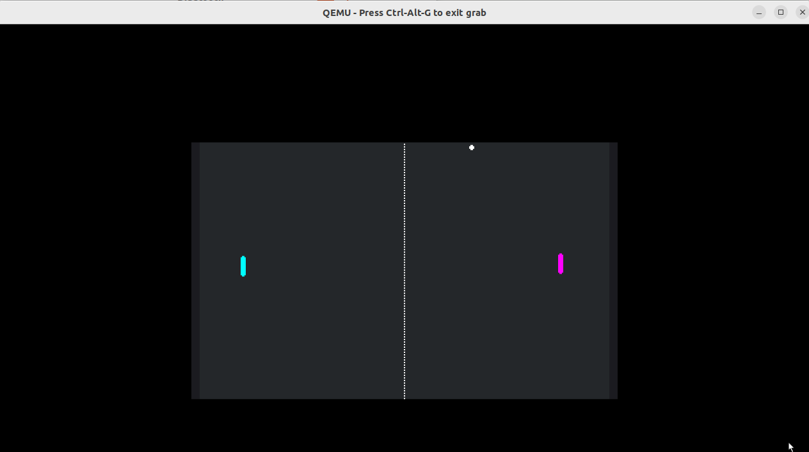

What you will learn:
Prerequisites:
git installed.Because this specific project is set up for cross-compilation environments, we will first clone it on your development host and then package it for the target.
git clone https://github.com/yulee-qnx/pong-qdd/
zip -r pong-qdd.zip pong-qdd
You need to move the project file from your host to the QNX Developer Desktop.
ifconfig
scp pong-qdd.zip qnxuser@192.168.122.242:/data/home/qnxuser
unzip pong-qdd.zip
The Godot engine is available via the QNX Open Source Ports. Ensure your target has internet access to fetch the packages.
sudo apk search godot-templates
sudo apk add godot-templates
Now that the engine is installed and the project files are present, you can launch the game using the rendering driver compatible with QNX Screen.
godot-template-release --path pong-qdd --rendering-driver opengl3_es
Game Controls
W (Up), S (Down)Up Arrow (Up), Down Arrow (Down)ESC (Initiates a proper shutdown sequence)When developing with Godot on QNX, keep the following in mind:
Feature | Support Level | Note |
Windowing | QNX Screen | Wayland is not currently supported for this port. |
2D Graphics | High | Excellent for HMI and UI visualizations. |
3D Graphics | Basic | Optimized assets required; avoid heavy GPU effects. |
Audio | Functional | Best supported on Raspberry Pi 4/5 environments. |
You have successfully deployed a Godot game to QNX! This workflow opens the door for high-quality graphical interfaces and visualizations on a hard real-time operating system.
Next Steps:
pong-qdd folder.